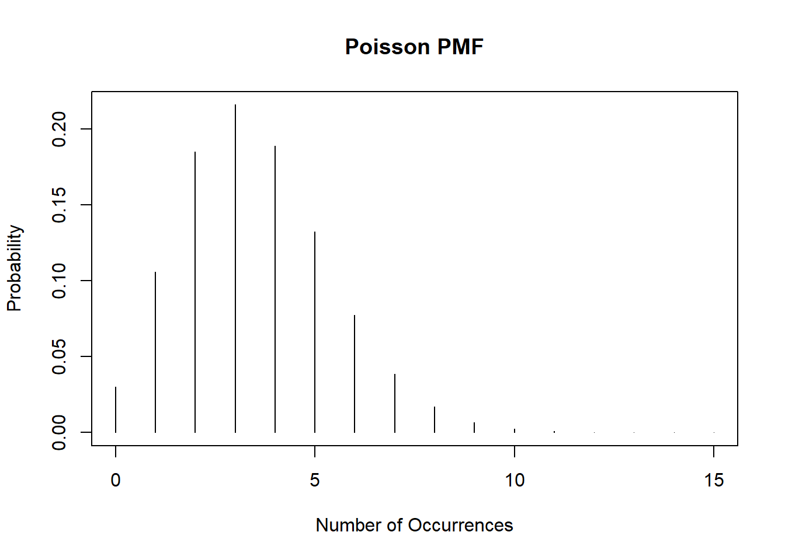
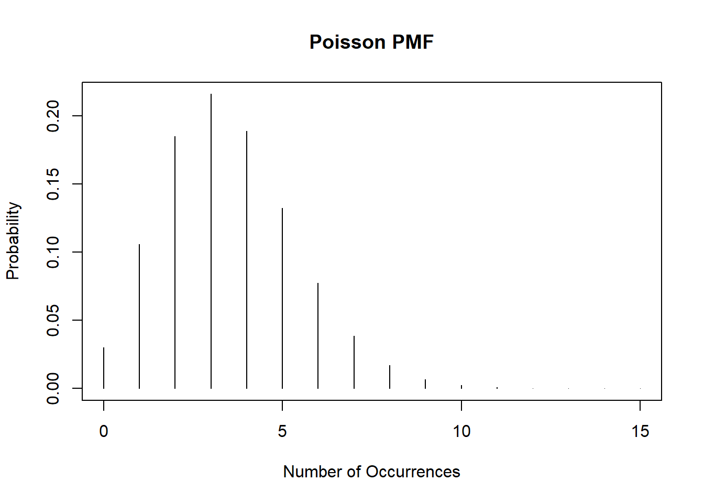

Code
plot(0:15, dpois(0:15, lambda=3.5), type='h', ylab='Probability', xlab='Number of Occurrences', main="Poisson PMF")
Alex Kaizer
University of Colorado-Anschutz Medical Campus
This page includes optional practice problems, many of which are structured to assist you on the homework with Solutions provided on a separate page. Data sets, if needed, are provided on the BIOS 6618 Canvas page for students registered for the course.
Homework 1, Exercise 3, involves examining the properties of estimators by their bias, consistency, and efficiency for normally distributed data for the median. For this exercise we will evaluate some of the same questions for the Poisson distribution with \(\lambda=3.5\):

Using loops, simulate data from a Poisson distribution with the same size increasing from 100 to 100,000, by 100 person increments. For each sample size calculate the bias for both the sample mean and variance. Plot the results for the bias for both the mean and variance. (Hint: for a Poisson distribution the mean and variance are both \(\lambda\).)
Reproducibly simulate a sample of 10,000 from each of the following distributions
?dnbinom)Determine the theoretical mean and standard deviation for each distribution and verify that the generated numbers have approximately the correct mean and standard deviation. Note, you can derive or look-up and cite your source for the theoretical mean and standard deviation.
Create a histogram and boxplot depicting each of the mock samples.
Assume we are interested in an outcome that has a chi-squared distribution with 2 degrees of freedom (i.e., \(df=2\)). Generate and save a vector with 500 sample means (i.e., the mean of five-hundred simulated “experiments”), where each sample mean is from a sample size of 10 simulated from rchisq() in R.
Repeat for sample sizes of n = 20, n = 30, n = 40, and n = 50. It may be helpful to use a for loop or apply statement to tackle parts a and b simultaneously.
Calculate the mean and standard deviation associated with each of the five sets of \(\bar{x}\) values.
Create histograms of the sampling distribution of the mean, for each sample size n. Provide meaningful labeling (i.e., include a title and label the relevant axes).
Is there a value of the sample size n (i.e., 10, 20, 30, 40, or 50) where the distributions begin to look normal?
---
title: "Week 2 Practice Problems"
author:
name: Alex Kaizer
roles: "Instructor"
affiliation: University of Colorado-Anschutz Medical Campus
toc: true
toc_float: true
toc-location: left
format:
html:
code-fold: show
code-overflow: wrap
code-tools: true
---
```{r, echo=F, message=F, warning=F}
library(kableExtra)
library(dplyr)
```
This page includes optional practice problems, many of which are structured to assist you on the homework with [Solutions provided on a separate page](/labs/prac2s/index.qmd). Data sets, if needed, are provided on the BIOS 6618 Canvas page for students registered for the course.
# Exercise 1: Bias of the Mean and Variance for a Poisson Distribution
Homework 1, Exercise 3, involves examining the properties of estimators by their bias, consistency, and efficiency for normally distributed data for the median. For this exercise we will evaluate some of the same questions for the Poisson distribution with $\lambda=3.5$:
```{r}
plot(0:15, dpois(0:15, lambda=3.5), type='h', ylab='Probability', xlab='Number of Occurrences', main="Poisson PMF")
```
Using loops, simulate data from a Poisson distribution with the same size increasing from 100 to 100,000, by 100 person increments. For each sample size calculate the bias for both the sample mean and variance. Plot the results for the bias for both the mean and variance. (Hint: for a Poisson distribution the mean and variance are both $\lambda$.)
# Excercise 2: Theoretical and Asymptotic Results for Some Distributions
## 2a
Reproducibly simulate a sample of 10,000 from each of the following distributions
* NB($r=5, p=0.6$), a negative binomial distribution where $r$ is the target number of successful trials and $p$ is the probability of success within each trial (i.e., using the default parameterization in R, see `?dnbinom`)
* Weibull($\lambda=2, k=4$) where $\lambda$ represents the scale parameter and $k$ the shape parameter
## 2b
Determine the theoretical mean and standard deviation for each distribution and verify that the generated numbers have approximately the correct mean and standard deviation. Note, you can derive or look-up and cite your source for the theoretical mean and standard deviation.
## 2c
Create a histogram and boxplot depicting each of the mock samples.
# Exercise 3: The Central Limit Theorem with Chi-Squared Distributed Observations
## 3a
Assume we are interested in an outcome that has a chi-squared distribution with 2 degrees of freedom (i.e., $df=2$). Generate and save a vector with 500 sample means (i.e., the mean of five-hundred simulated "experiments"), where each sample mean is from a sample size of 10 simulated from `rchisq()` in R.
## 3b
Repeat for sample sizes of n = 20, n = 30, n = 40, and n = 50. It may be helpful to use a `for` loop or `apply` statement to tackle parts *a* and *b* simultaneously.
## 3c
Calculate the mean and standard deviation associated with each of the five sets of $\bar{x}$ values.
## 3d
Create histograms of the sampling distribution of the mean, for each sample size n. Provide meaningful labeling (i.e., include a title and label the relevant axes).
## 3e
Is there a value of the sample size n (i.e., 10, 20, 30, 40, or 50) where the distributions begin to look normal?